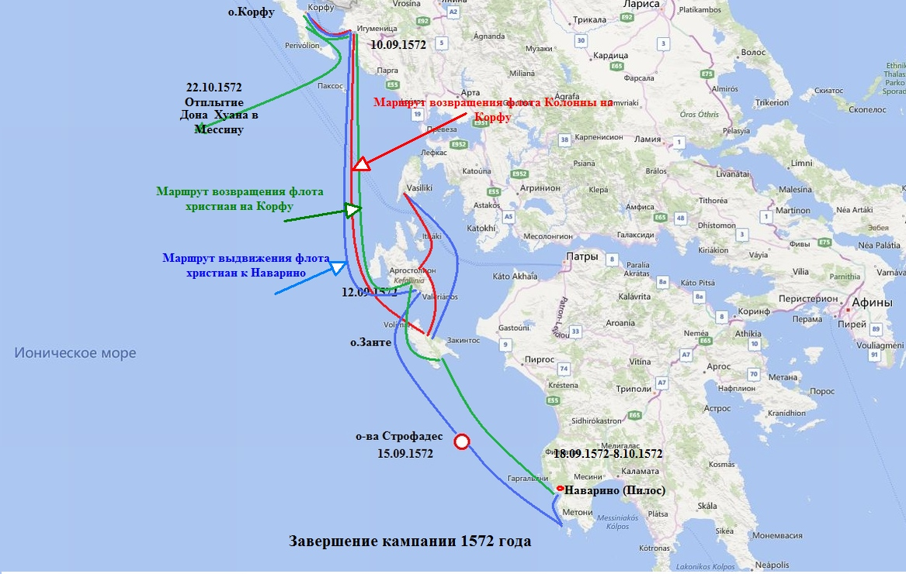
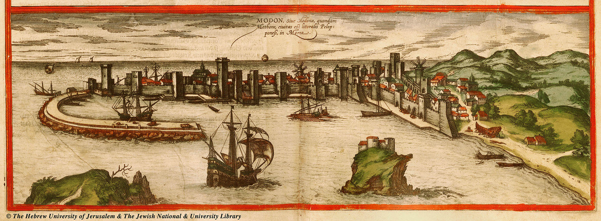
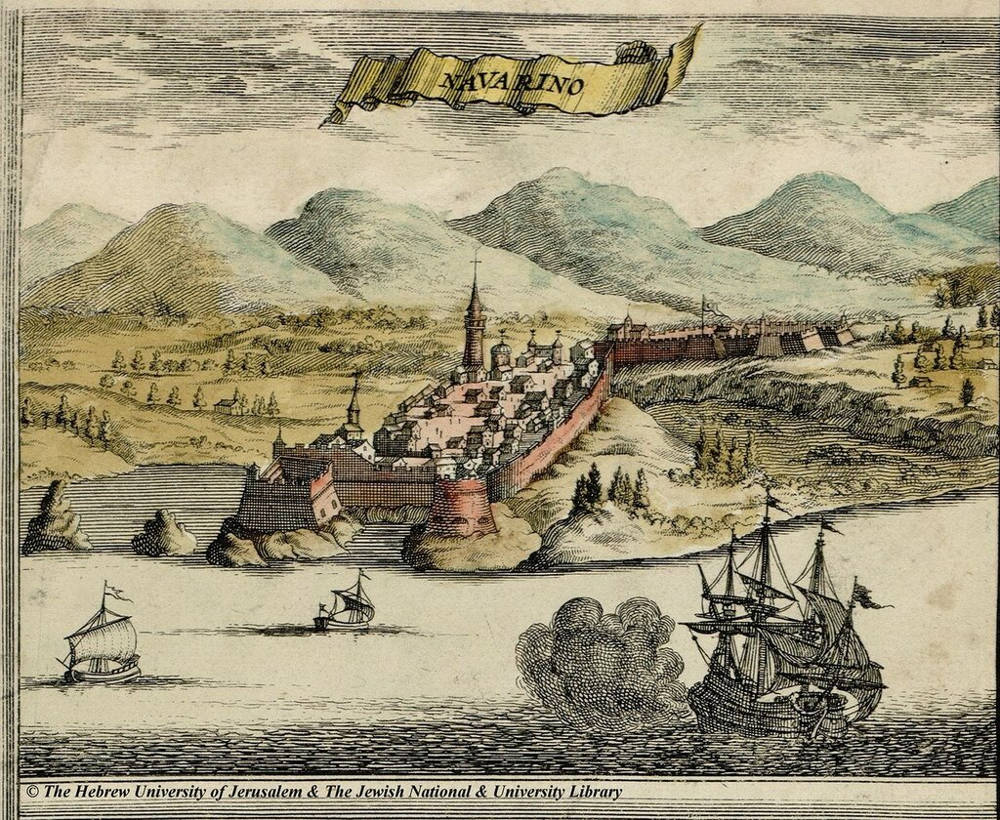
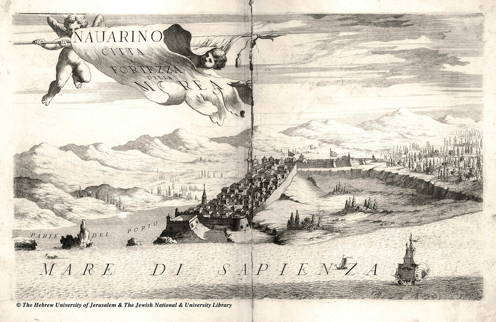

"La Commedia è finita!"
— Товарищ Сталин! Дай ответ,
Чтоб люди зря не спорили:
Конец предвидится ай нет
Всей этой суетории?..
А. Твардовский. Страна Муравия
Итак, 17-18 августа 1572 года христианский флот прибыл на Занте.

Ввиду того, что от Занте было совсем недалеко до Кефалонии и Корфу, военный совет флота решил оставить тяжелые парусники на этом острове, а на галерах и галеасах продолжить путь на соединение с эскадрой Дона Хуана. 20 августа флот прибыл на Кефалонию, провел там двое суток и 22 августа переместился на Лефкас.
Между тем главнокомандующий объединенным флотом Священной лиги Дон Хуан Австрийский, прибывший на Корфу еще 9 августа, вот уже две недели с нетерпением ожидал прибытия кораблей Колонны и Фоскарини. Не выдержав ожидания, он 28 августа посылает две галеры с приказом Колонне «без промедления привести армаду на Корфу». Папский адмирал, получив приказ, поворачивает свои корабли назад к Занте, где забирает парусники и 31 августа 1572 года флот в полном составе прибывает в Игуменицу. Там он пополняет запасы воды и, получив повторное напоминание Дона Хуана, направляется на Корфу. Под звуки салюта флот Колонны и Фоскарини соединяется наконец с пятьюдесятью галерами и пятью галиотами Дона Хуана и двумя галеасами герцога Тосканы. Несмотря на салюты и атмосферу праздника на кораблях, между адмиралами флота словно черная кошка пробежала. Дон Хуан не скрывает своего раздражения тем, что Колонна и Фоскарини не дождались его в Корфу и даже после того, как он прибыл на остров, не спешили соединиться с ним. Колонна свалил все на венецианцев, которые не выказывали особого желания подчиняться испанскому принцу.
Дон Хуан распорядился провести очистку подводной части прибывших кораблей, их конопатку и смоление, запастись водой на десять дней, после чего 7 сентября 1572 года отдал приказ флоту начать движение для поиска флота противника.
9 сентября разведка донесла, что «турецкий флот в составе 218 галер и 50 галиотов находится в Наварино и выказывает явное намерение дать сражение противнику». Дон Хуан на следующий же день вышел из Игуменицы с 195 галерами, 25 галиотами, восемью галеасами и 30 тяжелыми парусниками, приказав легким фрегатам и бригантинам держаться в тылу эскадры. Походный и боевой порядки флота по сравнению с Лепанто не потерпели изменений. Дон Хуан шел в центре «баталии» (65 галер эскадры центра), флагманские галеры папского и венецианского флотов шли по обоим бортам от него. Правым крылом из пятидесяти галер командовал Альваро де Басан (маркиз де Санта Крус), левое крыло также из пятидесяти галер находилось под командованием Соранцо, а тридцатью галерами резерва командовал Хуан де Кардона. Перед боевыми порядками на расстоянии 8 мили днем и 4 миль ночью шел авангард. К 12 сентября «Католическая армада» (термин хрониста Сервиа) достигла гаваней Кефалонии. Там они узнали от перебежчиков с флота Улудж Али, что турецкий адмирал опасается встречи с христианским флотом, сознавая слабость своей артиллерии.
15 сентября флот христиан выдвинулся к островам Строфадес, расположенным примерно на полпути от Занте до Наварино. Монастырь, расположенный там, был сожжен, а все его монахи вырезаны турецкими отрядами Улудж Али при бегстве из Лепанто в прошлом году. Дон Хуан провел на островах весь световой день, надеясь под покровом ночи совершить переход к месту базирования турецкого флота и на рассвете напасть на него. Но турки не зевали и накануне прихода христианского флота покинули Наварино, переместившись со всем флотом в хорошо укрепленную гавань Модона.

Порт Модона. Браун и Хогенберг.
Обмен артиллерийским огнем между флотами не дал никаких результатов. Как, впрочем, и всё последовавшее маневрирование, которое продолжалось три недели.
Флот Священной лиги стал на якорь у острова Сапиенца, находящегося примерно в одной миле от выхода из Модона. 18 сентября несколько галер направились для пополнения запасов воды к берегу, расположенному милях в 5 от турецкой крепости Корон. Солдаты, посланные за водой, были атакованы турками, что потребовало высадки дополнительного десанта с кораблей Дона Хуана, чтобы загнать турок в их крепость. На флагманской галере испанского принца непрерывно совещался высший командный состав флота, пытаясь выработать план взятия Модона. но к единому мнению командиры так и не пришли. Не хватало сил, и Дон Хуан направляет отряд кораблей на Занте за подкреплением, а остальные силы заводит в спокойную гавань Наварино, продолжая наблюдать за действиями противника в Модоне.

Вид на Наварино. Гравюра Ф. де Вита, 1680.
Когда 20 сентября около тридцати турецких галер вышли из Модона, пытаясь выяснить дислокацию и намерения «Католической армады», Дон Хуан послал резерв своего флота под командованием Альваро де Басана на их перехват, но турки, лучше ориентирующиеся в прибрежных водах Мореи, смогли благополучно вернуться к основным своим силам. Улудж Али вытащил основную часть флота на берег, кормой вперед, создав дополнительную артиллерийскую защиту гавани за счет мощных носовых пушек своих галер.
Между тем турки, засевшие в крепости Наварино, начали вести беспокоящий огонь по кораблям христианского флота. Попытки десанта выбить их из укрепления не увенчались успехом, и 21 сентября Дон Хуан посылает двадцать галер за тяжелыми парусниками и германскими наемниками, которые оставались на Занте. Однако начались осенние шторма, и операция по переходу с Занте к Наварино затягивается на целую неделю. Подкрепление приходит только 27 сентября. Дон Хуан отдает приказ построить платформу из соединенных настилом двух галер и разместить на ней тяжелую артиллерию, чтобы бомбардировать корабли турок в Модоне. Но эта попытка провалилась. Поднялись юго-западные ветры, пошли дожди. В воздухе запахло зимой.
2 октября 1572 года Дон Хуан высадил 5000 пехотинцев под командованием Алессандро Фарнезе на берег. Всю ночь они карабкались к стенам Наварина, которые казались более доступными, чем старые венецианские укрепления Модона.

Наварино. Гравюра Винценцо Коронелли, 1686 год.
Но все попытки взять крепость, которые продолжались три дня, оказались безуспешными. 5 октября Дон Хуан приказал вернуть солдат и орудия на корабли. В ночь на 7 октября, годовщину битвы при Лепанто, Дон Хуан повел галеры своего флота к Модону, приказав парусным кораблям вернуться на Занте. К великому неудовольствию венецианцев, главнокомандующий флотом лиги объявил, что кампания 1572 года окончена. Нанеся "прощальный визит» в Модон, христиане обнаружили, что до двадцати турецких галер преследуют парусное судно (позже стало известно, что это венецианская нава с Крита) примерно в пятнадцати милях от берега. Надеясь отрезать туркам путь к отступлению, галеры христиан на полном ходу устремились ко входу в гавань Модона. Улудж Али направил до пятнадцати своих галер, чтобы артиллерийским огнем отогнать христиан от гавани. В возникшей суматохе всем турецким галерам удалось благополучно вернуться в гавань, кроме одной, флагманской галеры турок. Ее перехватил и после короткого боя захватил Альваро де Басан. Капитаном плененной галеры оказался сын бейлербея Алжира, внук знаменитого Хайреддина Барбароссы. Капитан, по словам хрониста Сервиа, был обезглавлен галерным рабом еще до захвата галеры. Двести галерных рабов были освобождены и двести янычар взяты в плен. Эта галера стала утешительным призом за всю дорогостоящую капанию 1572 года.
8 октября объединенный флот Священной лиги взял курс на Занте и далее на Кефалонию и Игуменицу. Несмотря на продолжающийся шторм, армада 20 октября пересекла пролив между Игуменицей и Корфу. Двумя днями позже Дон Хуан со своими кораблями взял курс на Мессину, куда и прибыл благополучно 26 октября 1572 года. Закончилась длившаяся почти три года эпопея объединенного флота Священной лиги. Эпопея, ознаменовавшаяся сражением при Лепанто 1571 года и бесславной кампанией 1572 года.